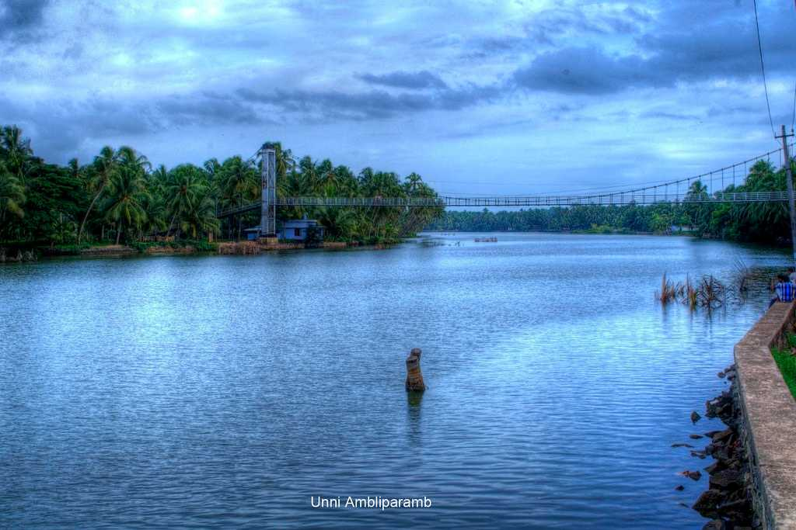
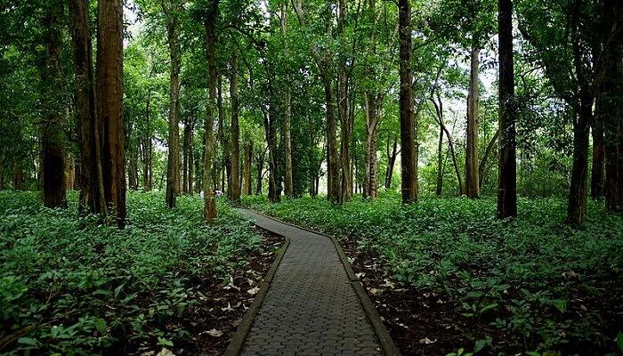

Biyyam Kayal
Biyyam Kayal is a beautiful backwater lake in the region.Lines by tall coconut trees, the pristine lake is famous for recreational activities and thrilling water sports that attract tourists every year. Annual boating competitions are held at the mesmerising lake during the festival of Onam.
Nilambur Teak Museum
Established in 1994, Nilambur Teak Museum is the first teak museum in the country.They have a collection of information in the form of articles and comprehensive documents that also mention the historic and artistic value of the wood.
Bharathapuzha River
Flowing along a stretch of 209 km, Bharathapuzha River is also called River Nila. It is the second longest river in Kerala and provides shelter to 11 reservoirs .This sacred river is believed to bestow salvation to those who are cremated on its banks, and accordingly sons pay homage to their fathers by performing the "Pithru Tharpanam" ritual on the Karkidaka Vavu day.

Kottakkunnu
Kottakkunnu is a mesmerising garden situated on a hill. Its beauty is often compared with the picturesque Marine Drive in Mumbai. The attraction has a Water Park, an Adventure Park, an Art Gallery, 16D cinema, an Open Air Theatre and a Balloon Park. These amusements make Kottakkunnu a perfect picnic spot.